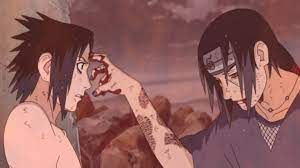

O susano de itachi
Nível:5/5

Itachi um ninja renegado da aldeia da folha, matou
toda sua família para salvar konoha. Dispertando o
ódio do seu irmão Sasuke.
Conheça mais sobre Itachi: Leia +
Blue Beetle
Nível:4/4

Filme da DC juntamente com warner bros
protaganizado Xolo Maridueña
e Bruna Marquezine.
Onde um adolescente ganha poderes ao ser escolhido por
um escravelho espacial.
Conheça mais sobre Blue: Leia +
Barbie
Nível: 3/3
O filme da barbie trás algumas reflexões sobre,
dependência emocional e auto cuidado. Depois de ser expulsa por não ser
uma boneca perfeita, a barbie vai atrás da verdadeira felicidade.
Conheça mais sobre a barbie: Leia +
Game of trhones
Nível 2/2
Serié sobre a história de Daeneries Targarie
ultima targarie em busca da conquista dos setes Reinos.
Mãe de Dragões nenhuma família em westeros pode parala.